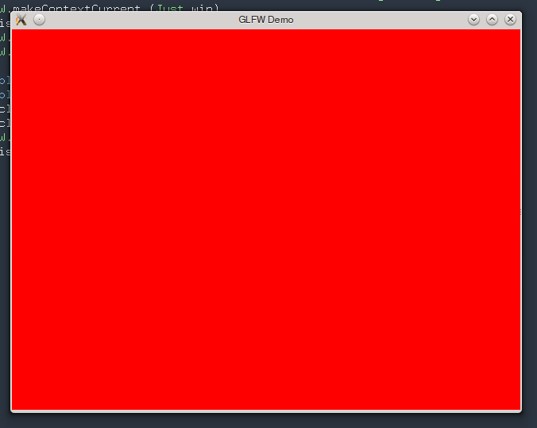

Post-Post Modern OpenGL in Haskell
For a while my goal was to learn the basics of OpenGL, sufficient for following the Haskell School of Expression and just enough to cover the humble requirements of my theoretic graphics application. A side goal is to keep the code base as compact and modern as possible, but not avoiding completely the benefitsof using some syntactic sugar, convenience functions and wrappers, provided by some modern graphics frameworks.
Why not using GLOSS, some, including myself a while ago, would ask? Though gloss seems to be maturing up and gaining momentum, it has a number of issues: 1) GLOSS is doing too much for what I need; 2) The code base of gloss was, last time I checked, together with all the dependencies that it is fetching, around 130MB. I feel that 130MB of various dependencies is too much for drawing simple shapes that I need. 3) Gloss is HUGE and has multiple dependencies, not all of which are well maintained and necessarily up to date, which may cause dependency conflicts in your code-base. That happened to me in the past, and I intend not to put myself in the same situation without a good reason any time soon.
On the way towards this goal, I managed to get through first steps, thanks to Postmodern Haskell and OpenGL: Introducing vinyl-gl, but there are a few problems with it: 1) Anthony’s code is relying on GLUT. The general consensus at the moment is that GLUT is a legacy package, which contradicts my goal of keeping the code base fresh. 2) Anthony’s latest tutorial goals further digress from my goals by putting an accent on using Anthony’s personal vynil-gl utility library. My goal is to learn OpenGL, not to use any personal utility libraries, unless it is necessary. 3) The tutorial is failing at the most crucial aspect of a tutorial: gradual increase of complexity – developing more complex examples, based on simpler examples. Instead, the second tutorial seems to be disconnected from the first. 4) Most important: due to outdated dependencies that Anthony is using in his code, none of his examples compile out of the box and require poking around, which is very frustrating when you hardly know what you are doing and don’t really know if it is your graphics card, or your code, or something else is broken.
Hopefully that explains my decision to come up with my own set of examples and, possibly, turn in into a set of mini-tutorials, that some other adventurous soul may find useful in the future:
Here’s the very first OpenGL Hello World in Haskell. It is using GLFW-b library as a odependency, instead of GLUT, for the reasons, mentioned above:
import Graphics.Rendering.OpenGL as GL
import Graphics.UI.GLFW as GLFW
main :: IO ()
main = do
GLFW.init
GLFW.defaultWindowHints
Just win <- GLFW.createWindow 640 480 "GLFW Demo" Nothing Nothing
GLFW.makeContextCurrent (Just win)
onDisplay win
GLFW.destroyWindow win
GLFW.terminate
onDisplay :: Window -> IO ()
onDisplay win = do
GL.clearColor $= Color4 1 0 0 1
GL.clear [ColorBuffer]
GLFW.swapBuffers win
onDisplay winWe will expand this example later with the following funcitonality: 1) A resize-window call back. That will make OpenGL to regenerate the window every time it is resized. 2) Escape-key call back. That will allow the window to be closed, when Excape key is pressed.
For now, signing off.

tutorial files on GitHub
next: Haskell OpenGL Tutorial: Resizing main window, key-events.